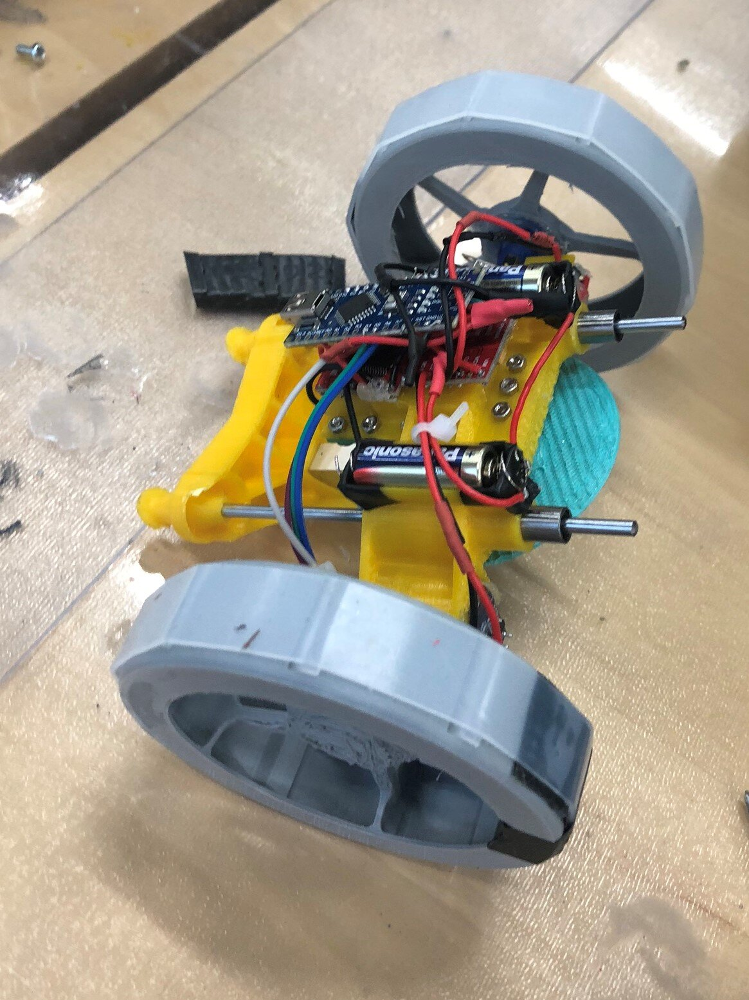

We Failed

Our 8th-10th iterations could jump. The 11st iteration could not. I messed up the tolerance. Now the linear bearing cannot be pressed into the bore. I tried to enlarg the bore manually, but I ended up making the enlarged bore not parallel, thus locking the whole mechanism. I felt terrible. I should not dissemble the 8th-10th iterations. They could not walk on sand, but they at least could jump. I felt very sorry for my teammate.
During the gameday, I am happy to learn that one other team is also challenging the old designs and making a jumping vehicle. We had distinct mechanisms, but we both failed. Anyone following the old designs succeeded.
Acknowledgement:
Thank you Prof. Ju for encouraging me.
Thank you Shuangxuan Ran for doing electronics for me.
Thank you Teaching Assistance Jiadi Zhang for finding me a bed in the Institute.